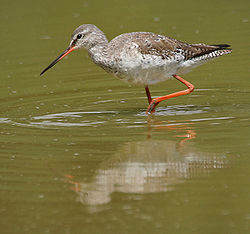
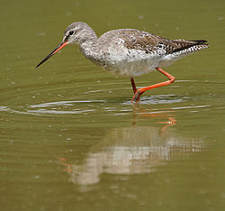

| Spotted Redshank | |
|---|---|
|  | |
| Spotted Redshank in non-breeding plumage | |
| Conservation status | |
| Binomial name | |
| Tringa erythropus (Pallas, 1764) |
| Spotted Redshank | |
|---|---|
|  | |
| Spotted Redshank in non-breeding plumage | |
| Conservation status | |
| Binomial name | |
| Tringa erythropus (Pallas, 1764) |
The Spotted Redshank Tringa erythropus is a wader in the large bird family Scolopacidae, the typical waders. It is an Arctic bird, breeding across northern Scandinavia and northern Asia. It is a migratory species, wintering around the Mediterranean, the southern British Isles, France, tropical Africa, and tropical Asia, usually on fresh or brackish water. It is an occasional vagrant in Australia and North America.
It is 29-33 cm long. It is black in breeding plumage, and very pale in winter. It has a red legs and bill, and shows a white oval on the back in flight. Juveniles are grey-brown finely speckled white above, and have pale, finely barred underparts. It nests on open boggy taiga, laying four eggs in a ground scrape. The call is a creaking whistle teu-it (somewhat similar to the call of a Roseate Tern), the alarm call a kyip-kyip-kyip. Like most waders, it feeds on small invertebrates.
The Spotted Redshank is replaced as a breeding bird further south by the Common Redshank, which has a shorter bill and legs, and is brown and white above with some dark patterning below, becoming somewhat lighter-toned in winter.
Taxonomically, it forms a close-knit group with the Greater Yellowlegs and the Greenshank, which among them show all the basic leg and foot colours of the shanks, demonstrating that this character is paraphyletic (Pereira & Baker, 2005). These three species are the largest shanks apart from the Willet, which is altogether more robustly built.
The Spotted Redshank is one of the species to which the Agreement on the Conservation of African-Eurasian Migratory Waterbirds (AEWA) applies.

_at_Bharatpur_I_IMG_5552.jpg){kind=link}